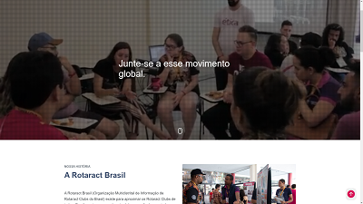
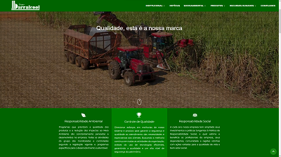
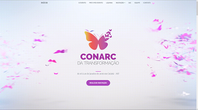

Projects

Rotaract Brasil
Redesign of the institutional website developed for
Rotaract Brazil Organization.

Grupo Barralcool
Redesign of the institutional website developed for
Grupo Barralcool, changing the layout to something modern and clean.

Conarc da Transformação
Website responsive developed for the national event,
based in
Cuiabá - Mato Grosso.